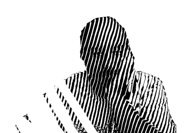

About me
I am a philosopher. I just finished a postdoctoral researcher position at Universidad de Chile. Originally from Santiago (Chile), I pursued my PhD at KU Leuven’s Institute of Philosophy (Belgium), where I also did my MPhil. I mainly work in topics related to (i) the philosophy of modality, specially its epistemology and metaphysics, (ii) understanding, and (iii) know-how. I also am competent in general epistemology, philosophy of science, philosophy of logic and philosophical logic.
In my spare time, I draw, play guitar and contribute to various open source projects.
